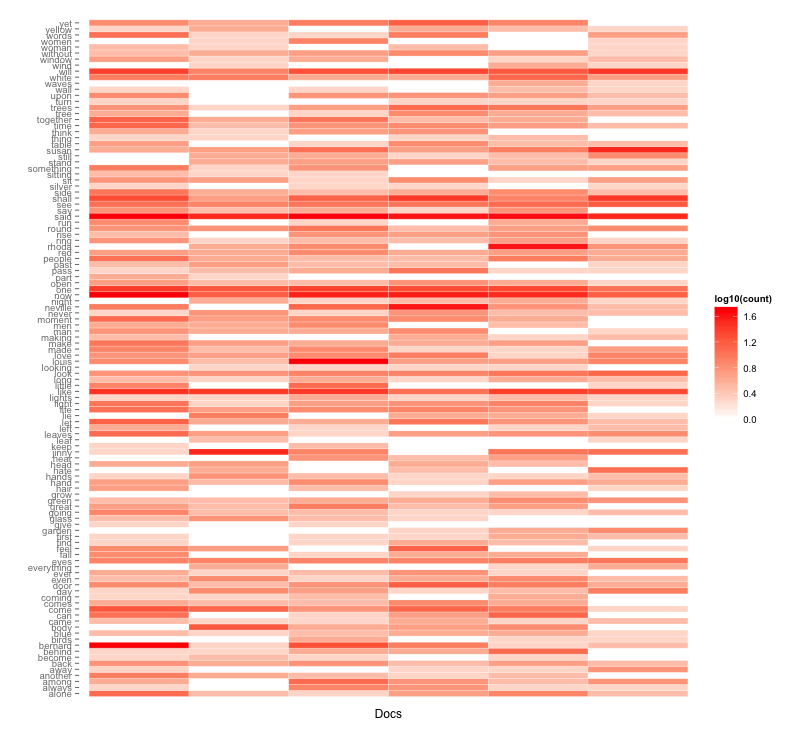

University of Victoria
Jentery Sayers
Spring 2014
Description
Format
Stipulations
Objectives
Assessment
Policies
#FutureEd
R is a free software programming language and software environment for statistical computing and graphics. The R language is widely used among statisticians and data miners for developing statistical software and data analysis.
First, please download it via the Comprehensive R Archive Network (CRAN) mirror at SFU (the mirror geographically closest to us) and also download the RStudio Integrated Development Environment (IDE).
Next, inspired by and borrowing heavily from Chris Forster's "With Thanks to Woolf and emacs, Reading The Waves with Stephen Ramsay," let's walk through (or rehearse, if you will) Ramsay's line of analysis in "Algorithmic Criticism." As we do, we might want to keep in mind claims (by Samuels, McGann, Kraus, and others) that experimental or conjectural analyses may be more "determinate" than other modes, including social and historical approaches. What do those claims imply? Why? And to what effects on critical practice?
Let's begin by grabbing a copy of The Waves by Virginia Woolf. Like Ramsay and Forster, we can use the Gutenberg Australia witness of the text. By copying the HTML version of that text (which does not have carriage returns), we can produce a TXT file for The Waves, making sure to not include peripheral content, including, "This eBook is made available at no cost and with almost no restrictions whatsoever." Here, all we need to do is copy the text from "The sun had not yet risen" to "The waves broke on the shore" and then paste it into a text editor like TextWrangler or Notepad. Then we can save that text file as the-waves.txt on the desktops of our local machines. (Again, make sure you copy the HTML file, not any TXT files of The Waves that you may find on the web. TXT files from Gutenberg often have carriage returns manually inserted into the text. These returns will complicate your results because they will keep you from examining the novel at the paragraph level (by rendering every line of text in the novel an enumerated line of text in an editor). In your editor, an enumerated line should correspond with a paragraph by Woolf.).
When examining this particular novel algorithmically, like Ramsay we'll want to determine things such as the "First twenty-four terms for all in The Waves." To do that, we're going to ultimately use tf-idf (term frequency–inverse document frequency) for information retrieval. In the case of Woolf's novel, Ramsay suggests: "Let N equal the total number of documents and let df equal the number of documents in which the target term appears. We have six speakers. If the term occurs only in one speaker, we multiply tf by six over one; if it occurs in all speakers, we multiply it by six over six."
Our six speakers are Bernard, Louis, Neville, Jinny, Rhoda, and Susan. And, as Forster observes, The Waves has two primary components: the "interior monologues" (or "semi-monologues") of the characters and the "inter-chapters," which describe the movement of the sun (e.g., "The sun rose higher. Blue waves, green waves swept a quick fan over the beach, circling the spike of sea-holly and leaving shallow pools of light here and there on the sand"). What's more, the monologues are not incredibly difficult to identify. Forster writes: "There is always a short phrase (starting with an opening single quotation mark—i.e. an apostrophe—and a capital letter), some text, a closing single quote (variously punctuated), the word 'said' followed by a character name and some punctuation mark, an opening single quotation mark and some words." All that said, when compared with other novels by Woolf, as well as other modernist novels (generally speaking), this structure renders the novel atypically conducive to algorithmic analysis.
So let's stop and make our first basic observation: Some texts are more conducive to algorithmic analysis than others. By extension, some novels will require less manual intervention (e.g., cleaning or marking up the text for computational analysis) than others.
Now, once we have a TXT file titled the-waves.txt on the desktops of our local machines, we can (as Forster suggests) "grep" the novel for lines matching patterns. Grep has a long history dating back to (at least) Unix line editors in the early 1970s and stands for "Globally search a Regular Expression and Print." Here, we will be using it to search for lines in The Waves, not a regular expression (or regex). So let's give grepping a try.
First, create a folder (empty for now) named "woolf" on your desktop. Then, in the command line, use "print working directory," or
pwdcd ~/desktopgrep 'said Bernard' the-waves.txt > woolf/bernard.txt
grep 'said Jinny' the-waves.txt > woolf/jinny.txt
grep 'said Louis' the-waves.txt > woolf/louis.txt
grep 'said Neville' the-waves.txt > woolf/neville.txt
grep 'said Rhoda' the-waves.txt > woolf/rhoda.txt
grep 'said Susan' the-waves.txt > woolf/susan.txtBut wait. If we return to the novel (egad!), we'll notice that, like all six products of our grep, "bernard.txt" is missing some semi-monologues that appear in Woolf's original. Understood as data corresponding with paragraphs in The Waves, these missing monologues comprise five lines of text in an editor:
'Now she walks across the field with a swing, nonchalantly, to deceive us. Then she comes to the dip; she thinks she is unseen; she begins to run with her fists clenched in front of her. Her nails meet in the ball of her pocket-handkerchief. She is making for the beech woods out of the light. She spreads her arms as she comes to them and takes to the shade like a swimmer. But she is blind after the light and trips and flings herself down on the roots under the trees, where the light seems to pant in and out, in and out. The branches heave up and down. There is agitation and trouble here. There is gloom. The light is fitful. There is anguish here. The roots make a skeleton on the ground, with dead leaves heaped in the angles. Susan has spread her anguish out. Her pocket-handkerchief is laid on the roots of the beech trees and she sobs, sitting crumpled where she has fallen.'
'No, that is too small, too particular a name. We cannot attach the width and spread of our feelings to so small a mark. We have come together (from the North, from the South, from Susan's farm, from Louis' house of business) to make one thing, not enduring--for what endures?--but seen by many eyes simultaneously. There is a red carnation in that vase. A single flower as we sat here waiting, but now a seven-sided flower, many-petalled, red, puce, purple-shaded, stiff with silver-tinted leaves--a whole flower to which every eye brings its own contribution.
'That goes on. Listen. There is a sound like the knocking of railway trucks in a siding. That is the happy concatenation of one event following another in our lives. Knock, knock, knock. Must, must, must. Must go, must sleep, must wake, must get up--sober, merciful word which we pretend to revile, which we press tight to our hearts, without which we should be undone. How we worship that sound like the knocking together of trucks in a siding!
'Now far off down the river I hear the chorus; the song of the boasting boys, who are coming back in large charabancs from a day's outing on the decks of crowded steamers. Still they are singing as they used to sing, across the court, on winters' nights, or with the windows open in summer, getting drunk, breaking the furniture, wearing little striped caps, all turning their heads the same way as the brake rounded the corner; and I wished to be with them.
'What with the chorus, and the spinning water and the just perceptible murmur of the breeze we are slipping away. Little bits of ourselves are crumbling. There! Something very important fell then. I cannot keep myself together. I shall sleep. But we must go; must catch our train; must walk back to the station--must, must, must. We are only bodies jogging along side by side. I exist only in the soles of my feet and in the tired muscles of my thighs. We have been walking for hours it seems. But where? I cannot remember. I am like a log slipping smoothly over some waterfall. I am not a judge. I am not called upon to give my opinion. Houses and trees are all the same in this grey light. Is that a post? Is that a woman walking? Here is the station, and if the train were to cut me in two, I should come together on the further side, being one, being indivisible. But what is odd is that I still clasp the return half of my ticket to Waterloo firmly between the fingers of my right hand, even now, even sleeping.'That's already quite a few, resulting from the lack of "Bernard said" in five of Woolf's paragraphs.
So let's stop and make our second basic observation: When working with algorithms and computer vision, don't forget to add a healthy dose of skepticism to your procedural analysis. Frequently return to the original text to make sure you're not missing key bits of content. Or, if you're working with a substantial amount of text, then at least note (in your ultimate analysis) what you're overlooking or conceding in order to conduct an algorithmic critique, distant/surface reading, or the like.
Given the issues above, for the balance of this workshop, we'll use Forster's pruned iteration of the The Waves, which he so kindly shared with us. (Thanks, Chris!) This will save us at least 90 minutes of editing and should remind us to share our research "data" whenever possible.
For the tf-idf analysis of The Waves, we're going to turn to R, which (in my experience) is most transparent when rendered through RStudio. That said, please run RStudio on your machine.
In RStudio, we'll work in the console. There, start with "get working directory," or
getwd()pwd in your terminal. But odds are that you wil not be on your desktop. Instead, you'll be in your home directory (something like "admin" or whatever user name you've given your computer.) So let's change your location using "set working directory to my desktop," or (for example)setwd("Desktop")getwd()Next we're going to follow Forster's instructions line by line and make an R "corpus" based on the six pruned TXT files (one for each speaker in The Waves) he provided us. We'll start by installing the "tm" (or "text mining") package in RStudio. In the bottom-right window, click the "Packages" tab, then "Install Packages," and then type "tm" into the search field. Click on the "tm" result and then press "Install" (leave the "Install Dependencies" box checked, too). The package should install rather quickly, and I encourage you to install other packages (including visualization packages) for work you'll do on your own.
After you've installed the "tm" package, repeat the step above and install "SnowballC," which is a stemming algorithm. Ultimately, then, you're installing two packages beyond R and RStudio's default set.
Now, in your R console, type what Forster recommends (or you can just highlight the content of each text box and paste it into R; each box below represents a single command):
Call the tm (text mining) package in R.
library('tm')woolf <- Corpus(DirSource('woolf/'))woolf <- tm_map(woolf,tolower)woolf <- tm_map(woolf,removePunctuation)woolf <- tm_map(woolf,removeWords, stopwords('english'))But hey! Now matter how common, words like totally matter. So let's stop and make our third basic observation: When conducting text analysis and other procedural analyses, review the stopword list and keep it available for reference. Additionally, when writing essays that employ text analysis and the use of stopwords, consider including, attaching, or referencing your stopword list. You should also mention whether you stemmed, depunctuated, decased, or otherwise modified the text.
Fortunately, in R we can see the "tm" package's stopword list for English by entering this command:
stopwords(kind="en")Now that we've "treated" The Waves for procedural analysis, we'll learn from Forster and create a "Document-Term Matrix" (DTM) for our corpus called "woolf". In this instance, a DTM based on The Waves is a rectangular array of words arranged in rows and columns, which together describe the frequency of terms occurring in our six TXT files. In our DTM, rows will correspond with TXT files (or documents) in the collection, and columns will correspond with words.
Here's a good time to make our fourth basic observation: The use of software programming languages and environments like R to generate, treat, examine, and express document-term matrices and other arrays is not simply an analysis of texts. It is the performative transformation (or deformation) of texts. In a sense, it is comparable to reading backwards, often with the hope of generating unpredictable or surprising results, which are premised on brushing against the very "senses of the text" (Samuels and McGann 36). To put it bluntly: we are changing the text, not just interpreting it.
So let's create that DTM in the R console, using tf-idf like Ramsay and Forster do:
dtm <- DocumentTermMatrix(woolf, control=list(weighting=weightTfIdf))R should have generated the DTM, but let's make sure. Follow Forster's steps and inspect the DTM. In R, we can call all texts in the matrix or just specific texts. We can also call specific columns, which (again) correspond with words in The Waves. Let's try both. First, call all texts and express columns 35 through 45:
inspect(dtm[,35:45])inspect(dtm[1,35:45])Now's a good time to stop and make our fifth basic observation: When studying the results of text analysis, note the differences between frequencies and counts. This observation is perhaps obvious, but making it doesn't hurt. And it's central to understanding procedural analyses and algorithmic criticism.
Our next step is to see if, like Forster, we can generate the same results as Ramsay. To do so, we're going to extract data from the DTM into six lists and then arrange those lists by their tf-idf scores. More specifically, we're going to draw what Ramsay calls the "First twenty-four terms for all characters in The Waves." Let's give it a whirl.
Following Forster, let's call the matrix output "m":
m <- as.matrix(dtm)bernard <- sort(m[1,], decreasing=TRUE)
jinny <- sort(m[2,], decreasing=TRUE)
louis <- sort(m[3,], decreasing=TRUE)
neville <- sort(m[4,], decreasing=TRUE)
rhoda <- sort(m[5,], decreasing=TRUE)
susan <- sort(m[6,], decreasing=TRUE)bernard[1:24]
jinny[1:24]
louis[1:24]
neville[1:24]
rhoda[1:24]
susan[1:24]Did we get the same results as Ramsay? As Forster? Why or why not? And in what relation to claims for the determinacy of methods in our readings about deformance, conjecture, and algorithmic criticism?
To unpack your results, check out Forster's approach in the second half of his piece. Also consider Collier's work on "Text Mining the Complete Works of William Shakespeare", where he will introduce you to not only term-document matrices (or TDMs) but also visualization libraries in R. Using Collier's work, you can produce visualizations like the one, of The Waves, below.
Let's conclude, then, with our sixth basic observation: Replicating the procedures of algorithmic criticism is like detective work. You need to attend to the material particulars without assuming you can ever perform a practice exactly like someone else. Recalling Wendy Chun: in the push for determinacy of method, the details of the compiling (or re-membering) process are fundamental. A follow-up question, then: of what (if any) use is R or algorithmic criticism to your research?